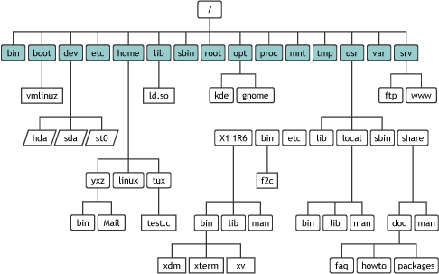
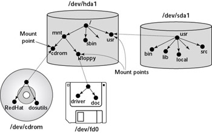

文件系统 API
本讲阅读材料
1. 文件系统概念
让应用程序直接管理磁盘并不是个好主意——你可以想象程序之间需要协调磁盘的并发访问，并且如果有程序出了 bug，其他程序的数据就可能被无故 “摧毁”。因此，为了更好地帮助应用程序管理持久数据，一个很自然的想法就是对磁盘进行 “虚拟化”，让应用程序访问 “虚拟” 的磁盘，实现应用与应用之间的隔离。
文件系统就此诞生：它可以看成是一个从 “路径” 到 “虚拟磁盘” 的映射——每一个路径，例如若干大家熟悉的文件，虽然可以按照 “目录树” 来理解，但也可以理解成 key-value mapping (key 是路径名，value 是 “虚拟磁盘” 中的数据)：
/proc/1234/maps映射到一组文本数据，标记了pid = 1234进程的内存映射情况；/dev/sda映射到实际的物理磁盘；/home/jyy/Projects/wiki/server.py映射到文件系统中的一个文件 (虚拟磁盘)。
从另一个角度，文件系统中的每个文件 (目录) 也都是操作系统中的对象，我们可以使用操作系统的 API 管理它们。
2. 目录树的创建
在 Linux (UNIX) 中，文件系统的根是 “/”，一切目录/文件都从根文件系统可达。文件系统中的目录构成一个树状的结构。下图是 Linux Filesystem Hierarchy Standard 中规定的一些目录和文件。

这就引发了一个很有趣的问题：系统的目录树到底是怎么来的呢？我们这里有一份最小的 Linux 系统镜像，解压缩后会得到若干文件：
.
├── initramfs
│ ├── busybox
│ └── init
├── Makefile
└── vmlinuz-minimal
你可以创建自己的 “启动时的根文件系统镜像” (initramfs)，正确的断句的方法是 “init-ram-fs”：在初始化时内存中加载的文件系统。在我们给出的例子里，Linux 在系统启动后会有 /busybox 和 /init 两个文件 (当然还有 /dev/ 中的设备)。而整个系统中所有的部分——比如大家熟悉的 /home 等，都可以理解成是系统启动后，由初始的根文件系统中的程序创建的。
如果你使用 make run 运行我们的 “最小 Linux”，你会得到一个几乎什么也没有的系统，连 ls 都没有：
/ # ls
sh: ls: not found
不过系统里还是得有一些可以用的东西，例如可执行文件 /busybox，你可以用它查看系统里所有的文件——真的是个 “最小” 的系统：
/ # /busybox find /
/
/.ash_history
/busybox
/root
/dev
/dev/console
接下来我们就可以变魔术了。在终端中执行以下命令：
/busybox mkdir -p /bin && /busybox mv /busybox /bin/
c1="arch ash base64 cat chattr chgrp chmod chown conspy cp cpio cttyhack date dd df dmesg dnsdomainname dumpkmap echo ed egrep false fatattr fdflush fgrep fsync getopt grep gunzip gzip hostname hush ionice iostat ipcalc kbd_mode kill link linux32 linux64 ln login ls lsattr lzop makemime mkdir mknod mktemp more mount mountpoint mpstat mt mv netstat nice nuke pidof ping ping6 pipe_progress printenv ps pwd reformime resume rev rm rmdir rpm run-parts scriptreplay sed setarch setpriv setserial sh sleep stat stty su sync tar touch true umount uname usleep vi watch zcat"
c2="[ [[ awk basename bc beep blkdiscard bunzip2 bzcat bzip2 cal chpst chrt chvt cksum clear cmp comm crontab cryptpw cut dc deallocvt diff dirname dos2unix dpkg dpkg-deb du dumpleases eject env envdir envuidgid expand expr factor fallocate fgconsole find flock fold free ftpget ftpput fuser groups hd head hexdump hexedit hostid id install ipcrm ipcs killall last less logger logname lpq lpr lsof lspci lsscsi lsusb lzcat lzma man md5sum mesg microcom mkfifo mkpasswd nc nl nmeter nohup nproc nsenter nslookup od openvt passwd paste patch pgrep pkill pmap printf pscan"
c3="pstree pwdx readlink realpath renice reset resize rpm2cpio runsv runsvdir rx script seq setfattr setkeycodes setsid setuidgid sha1sum sha256sum sha3sum sha512sum showkey shred shuf smemcap softlimit sort split ssl_client strings sum sv svc svok tac tail taskset tcpsvd tee telnet test tftp time timeout top tr traceroute traceroute6 truncate ts tty ttysize udhcpc6 udpsvd unexpand uniq unix2dos unlink unlzma unshare unxz unzip uptime users uudecode uuencode vlock volname w wall wc wget which who whoami whois xargs xxd xz xzcat yes"
for cmd in $c1 $c2 $c3; do
/bin/busybox ln -s /bin/busybox /bin/$cmd
done
mkdir -p /proc && mount -t proc none /proc
mkdir -p /sys && mount -t sysfs none /sys
然后你忽然就得到了一个可用的 Linux 系统！你可以试试你常用的命令——top, ps, ls, vi，全部都可以正常使用了。
感到惊讶？
整个操作系统世界都是 “系统调用” 创建的。我们的 Linux 系统仅仅提供一个最小的初始系统状态 (initramfs) 和一组系统调用，剩下的一切都是应用程序通过访问操作系统 API 访问操作系统对象实现的。
当然，在真实的系统中，initramfs 比我们的 “最小镜像” 包含更多的内容：
- 必要的内核模块 (例如设备驱动、文件系统等)。内核模块可以理解成操作系统内核运行时需要加载的动态链接库。模块的卸载机制还可以用于内核代码的更新。
- 配置文件、启动系统所需的二进制文件 (如 bash)、动态链接库 (如 libc) 等。
我们的演示程序中处于简单起见，使用静态链接方式连接了 busybox, 也不需要额外的驱动程序，因此就只有两个文件。在真实的 Linux 系统中的 /boot/ 目录中可以看到 initrd.img 文件，里面有几十 MB 的数据——同学们在更新系统遇到 Linux 内核或一些相关更新的时候，都会遭遇 Generate initramfs 这一耗时操作，就是为了更新这个初始的文件系统。
想知道 initrd.img 里有什么？
initrd.img是个cpio archive (实际是 cpio archive 拼接而成的)。如果你有兴趣看看 Linux 初始文件系统中包含哪些文件，请 STFW。
但无论如何这几十 MiB 的 “初始镜像” 都不是我们看到的完整的文件系统——就像我们的最小 Linux 启动后，大家熟悉的 /proc, /dev, /sys，在系统中都没有。这些文件系统都是 init 和之后的应用程序使用 mount 系统调用挂载的。mount 完成的工作是把一个设备和一个文件系统实现联系起来，在设备上创建一个文件系统实例，并且把创建的文件系统 “替换” 到文件系统中的一个目录中。

如此一来，系统中的一个目录就成为了某个设备上文件系统的 “根”。这样我们就可以把多个设备 (硬盘、USB Flash Disk, ...) 都放置到同一个文件系统中。而在 Windows 中，“挂载” 通常是发生在 “驱动器” 层面的 (drive letter assignment)，例如插入 USB Flash Disk 以后会分配一个新的 “盘符”。使用 mount -l 命令可以查看系统中已经挂载的设备：
sysfs on /sys type sysfs (rw,nosuid,nodev,noexec,relatime)
proc on /proc type proc (rw,nosuid,nodev,noexec,relatime)
udev on /dev type devtmpfs (rw,nosuid,relatime,size=4052568k,nr_inodes=1013142,mode=755)
devpts on /dev/pts type devpts (rw,nosuid,noexec,relatime,gid=5,mode=620,ptmxmode=000)
tmpfs on /run type tmpfs (rw,nosuid,noexec,relatime,size=816800k,mode=755)
/dev/sda2 on / type ext4 (rw,relatime,data=ordered)
...
挂载是通过 mount 系统调用实现的：
int mount(const char *source, const char *target,
const char *filesystemtype, unsigned long mountflags,
const void *data);
mount()attaches the filesystem specified by source (which is often a pathname referring to a device, but can also be the pathname of a directory or file, or a dummy string) to the location (a directory or file) specified by the pathname in target.
例如，mount /dev/sdb1 /mnt 可以将某个磁盘设备 (通常是 USB) 挂载到/mnt。mount 也可以把一个文件直接挂载到文件系统中，不过是通过创建一个 loopback device (回环设备，将到设备的读/写请求重新转换为到文件的读/写) 实现的——这恰好体现了 “文件是虚拟化的磁盘” 的思想，我们可以通过 strace 观察 mount 命令的行为：
openat(AT_FDCWD, "/dev/loop-control", O_RDWR|O_CLOEXEC) = 3
ioctl(3, LOOP_CTL_GET_FREE) = 3
...
mount("/dev/loop3", "/mnt", "ext4", MS_MGC_VAL, NULL) = 0
在 loop (4) 的手册中：
LOOP_CTL_GET_FREE: Allocate or find a free loop device for use. On success, the device number is returned as the result of the call. This operation takes no argument.
ioctl() 返回了一个新的 loopback device 编号 (3)。之后的系统调用序列自动检测文件系统的类型为 ext4，然后使用 mount 系统调用完成挂载。
3. 目录/文件管理
有了完整的文件系统树，目录操作大家就非常熟悉了——在 Windows “资源管理器”、Linux 发行版中的 “文件管理器” 中，我们每天都对目录完成各种操作：创建目录 (mkdir)、删除目录 (rmdir)、重命名……Linux 提供了一系列的系统调用来管理文件系统中的目录和文件。这些系统调用会被 Linux 系统转发给具体的文件系统实现，请大家阅读教科书学习相关的内容。
文件 (虚拟磁盘) 的访问时通过文件描述符完成的。今天文件描述符是访问操作系统对象的 “handle”，但最早的时候文件描述符的主要功能就是访问文件。我们可以对文件描述符执行文件访问操作：
- mmap，将文件数据映射到地址空间中的连续一段；
- read，读取数据并更新偏移量；
- write，写入数据并更新偏移量；
- lseek，修改文件描述符偏移量。使用
SEEK_CUR,SEEK_SET和SEEK_END分别从当前位置、文件头部、文件尾部更新偏移量； - ftruncate，改变文件的大小。
文件描述符管理中，比较令人困惑的部分是文件描述符在 fork/execve 之后的行为。为了让父进程能灵活配置子进程的输入输出文件，UNIX 系统很自然地设计 execve() 系统调用的行为是继承进程原先的文件描述符 (自然也继承偏移量)。但 fork 之后，文件描述符中偏移量的行为就没有那么简单了：
- 系统中如果有多个
O_APPEND的进程，它们将始终写入文件的末尾； - 父子进程共享偏移量。例如父子进程都用
printf()打印日志。当./a.out > a.log时，父子进程需要共享偏移量以保证它们的日志不会互相覆盖。
另一个麻烦之处是 dup() 复制的文件描述符，它似乎也应该和原先的文件描述符共享偏移量：我们可以用 dup 实现文件描述符的备份 (例如 stdout)：
int stdout_fd_bak = dup(STDOUT_FILENO); // 备份
fflush(stdout):
freopen(..., stdout); // 替换stdout对应的文件描述符
...
fclose(stdout);
dup2(stdout_fd_bak, STDOUT_FILENO); // 恢复
关于这些细节，请大家阅读教科书第 39 章内容。实际上，操作系统内的 API 随着操作系统的演化。我们看到 Linux 经历了单处理器到多处理器、互联网的蓬勃发展、单机到云计算/数据中心的变迁，也发生了很多变化。随着计算机软件系统 (甚至编程语言，例如 C++ 和 Java) 的成长，很多老的机制在保持兼容性的同时，API 之间交互的复杂性也爆炸式地增长——例如操作系统中新增任何机制，都需要考虑和 fork 的交互；有些机制甚至 “放弃” 了对 fork 的支持，例如线程 (pthreads) 在 fork 之后只有执行 fork 的线程能继续执行。